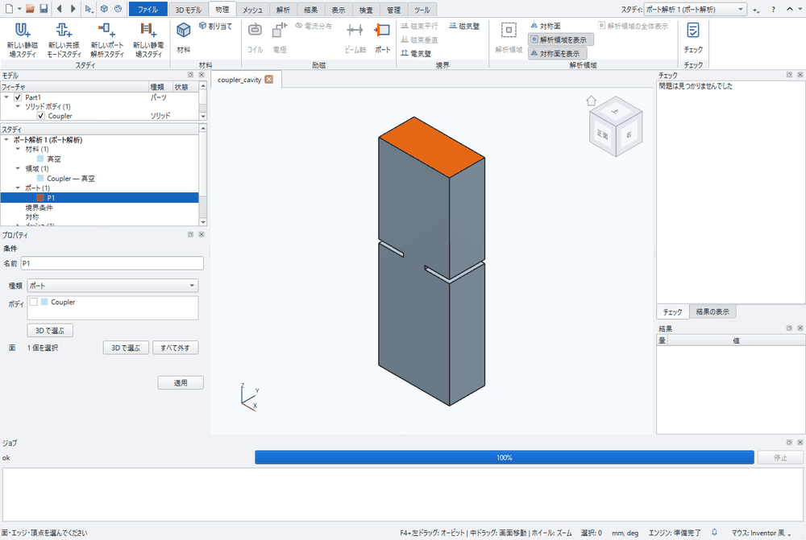
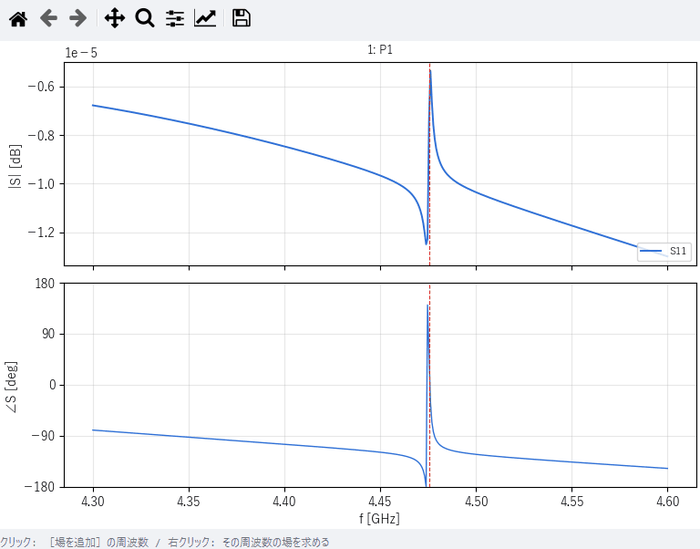
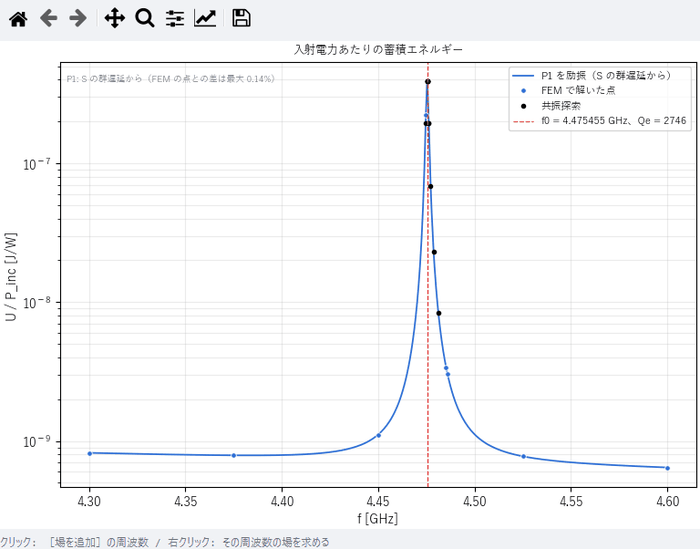
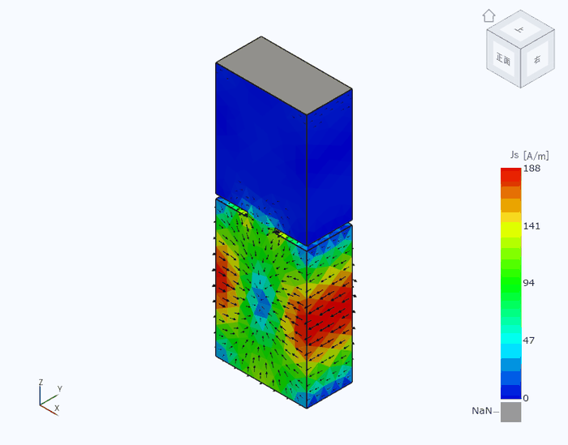
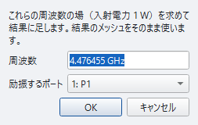

第 22 章
ポート解析
ポート解析 この章では、導波管・同軸のポートのある空洞・伝送路の周波数応答を求めるスタディを説明します。ポート、周波数スイープと S パラメータ、共振探索（f0・Qe・Q0・QL・β）、周波数ごとの場と位相、場の追加です。題材は examples/coupler_cavity.emrm（直方体の空洞にアイリスで導波管をつないだカプラー空洞）です。
22.1 ポート解析のスタディ
周波数をスイープして S パラメータを求め、空洞なら共振点の f0・ポートごとの外部 Q（Qe）・内部 Q（Q0）・負荷 Q（QL）・結合係数 β を求めます。カプラー空洞のような 1 ポートでも、入力と出力のある 2 ポート以上でも使えます。計算は Cav3D-Studio のポート解析（ポートの断面の 2D モード解析・ポートの吸収境界・周波数ごとの複素の連立方程式）と同じです。
形状は共振モードと同じく、真空（と誘電体）のボディで作ります。ボディの外面は導体の壁です。導波管・同軸線は、ポートの面まで形状に含めます。
リボンの［物理］タブ → ［スタディ］パネル → ［新しいポート解析スタディ］で作ります。共振モードのスタディの右クリックの［ポート解析のスタディとして複製］でも作れます（材料・壁・対称面・メッシュを写します。第 16 章）。
電気壁・磁気壁・対称面は、共振モードと同じです（第 21 章）。ポートの面を対称面で切ってもかまいません（半分・1/4 のポートのまま解きます）。
22.2 ポート
3D ビューでポートの面（導波管の端の面）を選び、リボンの［物理］タブ → ［励磁］パネル → ［ポート］をクリックします。物理タブでは、ポートの面を橙で塗ります。

図 22-1 カプラー空洞。上の端の面がポート（橙）。左はポートのフォーム。 ポートを 2 つ以上作るときは、同じように足します。ポートの番号は、スタディのブラウザの並びの順（P1・P2…）です。

ポートの断面を 2D で解いて、支配モードを自動で求めます。導体の境界が 1 つなら導波管の TE・TM（矩形・円形・任意の形）、2 つ（同軸）なら TEM です。同軸の S は、その線路の特性インピーダンス Z0 が基準です（ログと表に Z0 が出ます）。
22.3 解析の設定
| 欄 | 内容 |
|---|---|
| 開始・終了の周波数 | スイープの範囲（例 4.3 GHz）。ポートのカットオフより下の周波数は、S が振幅比になります（ログに警告） |
| スイープ | 等間隔（全部の点を解く）か適応（少ない点を解いて、有理補間で全部の点の S を求める。共振の鋭い空洞に向く） |
| 周波数の点の数・解く点の上限 | 結果の点の数と、適応スイープで解く点の上限。適応スイープは点の間を補間するので、点を増やしても時間はほとんど増えず、曲線がなめらかになります。既定は等間隔 41 点・適応 401 点 |
| 共振探索 | 励振するポートの U/P_inc（入力電力あたりの蓄積エネルギー）の最大の近くを細かく探し、f0・ポートごとの Qe・Q0・QL・β を求めます |
| 壁の損失 | Q0 に使います（導電率・表面抵抗（超伝導）・なし）。誘電体の tanδ も Q0 に入ります |
| 場を保存する周波数 | 場を表示する周波数（カンマ区切り。例 4.47 GHz, 4.48 GHz）。空欄なら共振探索の f0、それも無ければ範囲の中央。共振探索の f0 の場はいつも足します |
| 励振するポート（場・共振探索） | 場の計算と共振探索で、どのポートから入射するか（入射電力 1 W） |
共振探索の Q
結合モード理論で、次のように求めます（Cavity3D-FEM の理論メモ §13.9）。
1 ポート: Qe = ω0 U_max / (4 P_inc)（ピークの高さ。採用値）。確かめとして、半値幅・S11 の位相・複素固有値からも Qe を求めて表に並べます（4 つがほぼ同じなら信頼できます）。
2 ポート以上: ポート k の Qe,k = ω0 U_j / (|S_kj|² P_inc)（別のポート j から入射したとき、ポート k へ出る電力から）。ポートへの放射だけの無損失の負荷 Q は 1/Q_ext = Σ 1/Qe,k で、確かめとして半値幅・透過の位相・複素固有値からも Q_ext を、ピークの高さからも励振ポートの Qe を求めて表に並べます。
Q0 は摂動の壁損失（と誘電体損失）から求め、1/QL = 1/Q0 + 1/Q_ext、β_k = Q0/Qe,k です。
22.4 結果の見方
解析が終わると、S パラメータのグラフのタブが開きます。上が |S_ij| [dB]、下が位相 ∠S_ij [deg] で、マウスの位置の周波数の値を下の行に読み出します。共振探索の f0 に点線を引きます。［S パラメータ］でいつでも開き直せます。


U/P_inc（入射電力あたりの蓄積エネルギー、対数）のタブも並べます。適応スイープでは、蓄積エネルギーは FEM で解いた点にしか無いので、S の群遅延（無損失のエネルギー定理）から全部の点の U/P_inc を求めて線にします。FEM で解いた点との差が 5% を超えたら使わず、解いた点をつなぎます（図の左上に差を書きます）。共振探索の点も同じ線に入るので、鋭い山の形が見えます。


同軸（TEM）のポートがあると、S パラメータのタブの上に［同軸ポートの S を次の基準に換算］と Ω の欄が出ます。入れると、グラフと Touchstone の S をその基準（50 Ω など）に換算します（共振探索・U/P_inc は線路の S のまま）。
リボンの［結果］タブ → ［評価］パネル → ［Touchstone］で、S を Touchstone（
.sNp）に保存します。ジョブのフォルダにもs_params.s<N>pとs_params.csvを書きます。右の［結果］のドックの表は、場を保存した周波数の一覧です（#・f・励振したポート・その周波数の |Sii|）。行を選ぶと、その周波数の場を表示します。下の表に、共振探索の値とポートの Z0・カットオフが出ます。
場と位相
場は、入射電力 1 W のときの複素の振幅です。［結果の表示］のパネルの［位相］のスライダで、成分（Ex など）と矢印は瞬時値 Re[E ejφ] になります。|E|・|H|・|Js| は振幅で、位相によりません。スライダの左の ▶ で位相を回し続けます（成分と矢印が時間とともに振動します。もう一度押すか、スライダを動かすと止まります）。


表面電流・断面・表面・3D の矢印・線上のグラフ・フィールドマップは、共振モードと同じ操作です。
場を後から足す
リボンの［結果］タブ → ［評価］パネル → ［場を追加］をクリックします。
周波数（カンマ区切り）と励振するポートを入れて、［OK］を押します。結果のメッシュをそのまま使って場を求め、今の結果に足します（解析をやり直すより速い）。

図 22-5 場を追加のダイアログ。グラフをクリックした周波数が既定になります。 足した場は、結果の表で選ばれます。

S パラメータ・U/P_inc のグラフで右クリックすると、「4.476 GHz の場を求める（P1 を励振）」のような項目が出ます。選ぶと、その周波数の場をすぐに求めます。
22.5 精度の目安
矩形導波管（40 × 20 mm、長さ 60 mm）の素通りで |S21| = 0.99999、|S11| < 10−4、S21 の位相の誤差 0.06° 以下、入射 1 W の TE10 の振幅が解析解と 0.1% で一致。
例題のカプラー空洞で、Qe の 4 つの推定が 0.5% 以内で一致。1 ポートの共振探索の値は、Cav3D-Studio の共振探索と 1e-8 以内で同じ。
対称な 2 ポートの結合空洞で、2 つの Qe から求めた |S21(f0)| = 2√(Qe1 Qe2)/(Qe1 + Qe2) が、計算の |S21(f0)| と 0.2% 以内で一致し、無損失の負荷 Q の 3 つの検算が 3% 以内で一致。